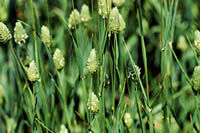

What is canary seed?
Canaryseed (Phalaris canariensis), or annual canarygrass, is a cool weather crop with one market. It is a major component of feed mixtures for caged and wild
birds.
Domestic commercial bird feed (indoor and outdoor) is generally made by blending various
seeds such as millet, safflower, canaryseed, flaxseed and canola. Saskatchewan is one of the largest exporter of canaryseed in the world.
Why is it produced?
Its main use is
for birdfood mixtures for wild and domestic birds. Canaryseed is usually grown under contract even though
world consumption of canaryseed remains fairly constant regardless of price. This means that there is little substitution of other birdseed for canaryseed.
Canaryseed demand and consumption do not fluctuate greatly during recessionary periods. Birds are popular pets for apartment dwellers, and export markets are in countries with high populations such as the USA, Japan, Europe, Taiwan, Mexico, and Brazil. Canaryseed may be a good choice as a specialty crop for these reasons.
Where are the crops produced?
Canary seed has major production in Canada, USA,
Hungary, Australia, Argentina, and Mexico.
Major areas of production in Saskatchewan are the Kindersley-Elrose, Regina plains, and Melfort areas. Canaryseed can be grown successfully wherever wheat grows well, except in drier areas of the Brown soil zone.
Presently, most (about 85%) of the Western Canadian canary seed production is in the parkland zone of Saskatchewan.
How much is produced?
Production in Canada had grown to 150,000 ha (375,000 acres) in 1995, with over 90% located in Saskatchewan. The average yield of this crop in Saskatchewan is approximately 1,100 kg/ha (1,000 lbs/acre). Canary seed ranges in price from 13 to 14 cents per pound.
Saskatchewan is the largest exporter of canaryseed in the world. Our production accounts for over one-half of total annual world production of approximately 300,000 tonnes, and over two-thirds of world trade.
Increases or decreases in production of canaryseed in Saskatchewan can have a major impact on world price and the market is characterized by large swings in price.
What does it look like?
The seedlings resemble green foxtail or corn seedlings, are finely leafed, and purple to red at the base of the stem. Mature plants
are approximately one metre in height and have small compact heads. Tiny hairs at the base of the seed make canaryseed dust very irritating to
the skin during handling. Canary seed and flax seeds are similar in size and shape. Canary seed has a shallow, but dense, root system.
The two varieties registered in Canada, Keet and Elias, perform similarly in Saskatchewan. Elias has a larger head and longer straw.
Keet is earlier maturing and has improved lodging resistance.
Feed nutrient values of canaryseed straw are on average: crude protein 4 to 5%, TDN 40 to 48%,
calcium 0.3%, and phosphorus 0.3%.
How is it produced?
Canary seed is grown as a specialty
crop (usually under contract),
It requires about the same maturing time as wheat. The shallow, but dense, root system on the plant requires fairly moist topsoils in which to thrive.
Canaryseed
- is a cool season crop which prefers long warm days and cool nights, making it well adapted to western Canada.
- matures in approximately 100 days.
- is shallow rooted and is more
sensitive to heat and less drought-tolerant and salt-tolerant than wheat. It does best on heavy, moisture-retentive soils.
- should be seeded as early as possible in May.
- requires nitrogen, phosphorus, potassium,
sulphur, and micronutrients. Nitrogen and
phosphorus requirements are similar to wheat. Unlike wheat, only a small amount of fertilizer can be safely placed with the seed.
- develops slowly and competes poorly with weeds.
- can be affected by aphids -- (bird cherry oat aphid and the English grain aphid), ergot and Septoria
leaf mottle (Septoria triseti)
The presence of tiny hairs at the base of the seed makes canaryseed dust very irritating to the skin during harvesting and handling. Research has
linked this dust to respiratory health problems. Dust masks should be worn when handling this crop.
Canaryseed is very shatter resistant and
can be straight-combined. Swathing should be delayed until the crop has reached full maturity and immediately combined.
Canaryseed is considered dry at 13% moisture. Canaryseed with the hull intact is shiny and golden yellow. Dehulled canaryseed is dark brown in colour.
Canaryseed is cleaned before it is shipped for export. (called primary processing). Saskatchewan has a large special crop primary processing industry. Over 50 businesses were processing canaryseed in 1995. Canaryseed is sold to export markets in bulk or in bags.
Where does canaryseed go after harvest?
Western Canada supplies most of the birdseed ingredients required by
both the indoor and outdoor domestic birdseed packaging industry.
Western Canadian packagers are now distributing bird feed mixes locally,
mainly to retail grocery chains and pet stores.
Large processors distribute to individual bird breeders, large and small
retail stores and major users such as zoos and wild animal farms. Some
processors package, label and customize products exclusively for pet,
grocery and hardware store chains.
|